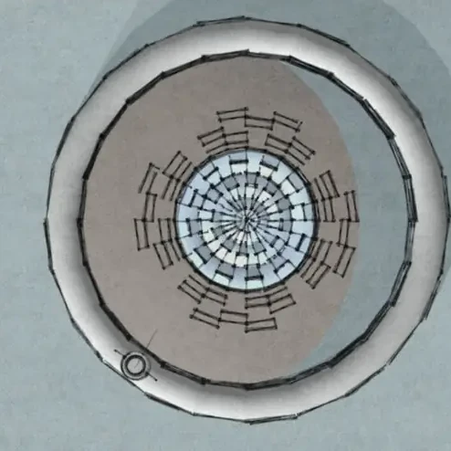

space
Spirit Eye of skwácháýs
public art concept

Spirit Eye of skwácháýs. A public art concept recognized with Best Public Art Concept and Council's Choice within the BIDC Public Art Intensive.
space · Spirit Eye of skwácháýs
space
public art concept

Spirit Eye of skwácháýs. A public art concept recognized with Best Public Art Concept and Council's Choice within the BIDC Public Art Intensive.